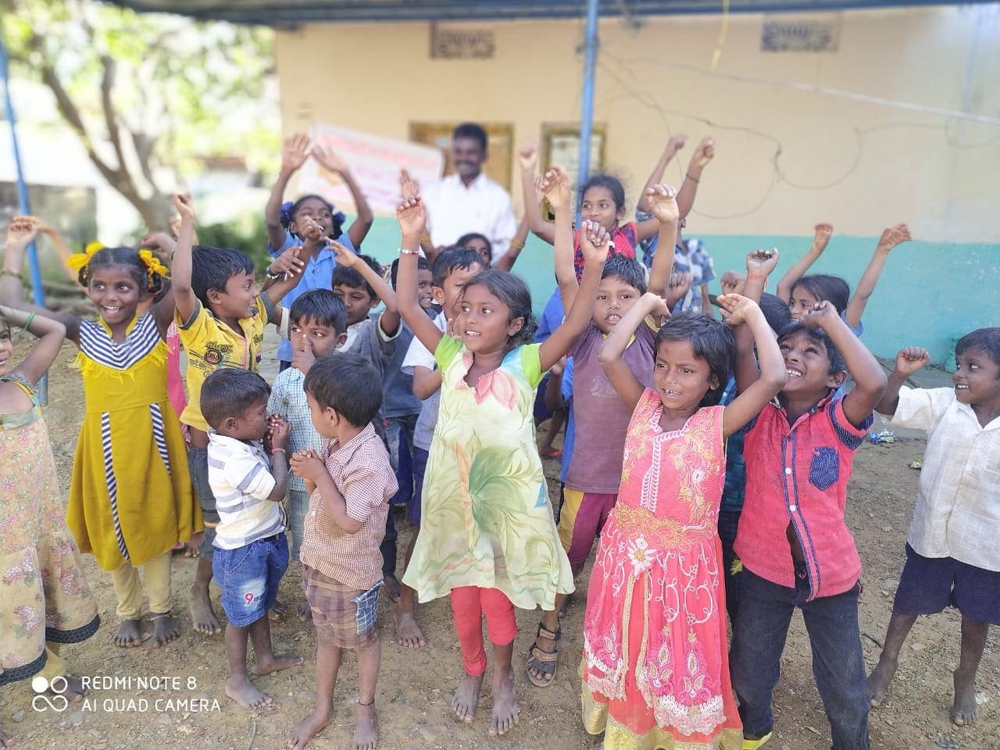

Complete Fiscal Transparency, Statutory Integrity & Proven Stewardship.
Select a compliance category from the tabular menu below. Only one active section is visible on screen with full statutory records, audited tables, and governance documentation.

Statutory Record • Institutional Registrations & Audits
Statutory Verification • Public Record
Legal Registrations & Statutory Identifiers
Dalit Welfare Association complies with all regulatory reporting mandates under Indian law. Below is the verified registry of institutional registrations, approvals, and tax-exempt statuses.
Accreditation & Verification Platforms
| Record | Identifier | Authority | Validity |
|---|---|---|---|
| Society Registration | No. 384/1993 | Registrar of Societies, AP | 22 June 1993 |
| FCRA Registration | 010270166 | Ministry of Home Affairs (MHA) | Valid to 30 Sept 2028 |
| Section 12A URN | AAKFD2353BE20214 | Income Tax Department | Charitable Exemption |
| Section 80G URN | AAKFD2353BF20216 | Income Tax Department | 50% Domestic Deduction |
| Permanent Account No. (PAN) | AAKFD2353B | Income Tax Department | Institutional Trust |
| NITI Aayog NGO Darpan | AP/2021/0276162 ↗ | NITI Aayog Portal | Verified Profile |
| Independent CA Auditor | Sivapuram Subramanyam & Co., Chartered Accountants | Nandyal, AP | |
Stamped copies provided to institutional partners upon formal request.
Request Certified Copies